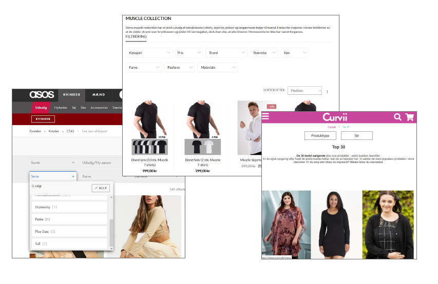
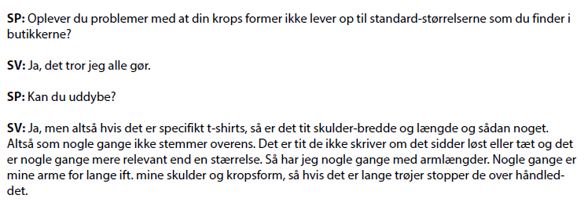
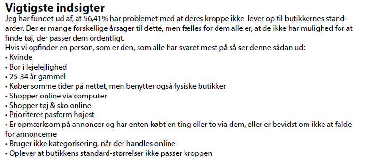
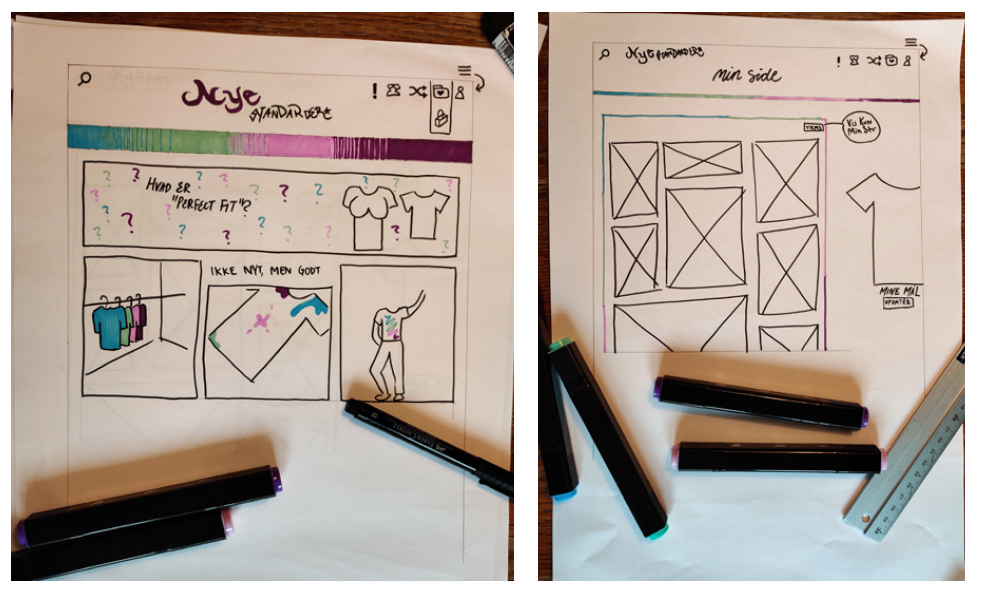
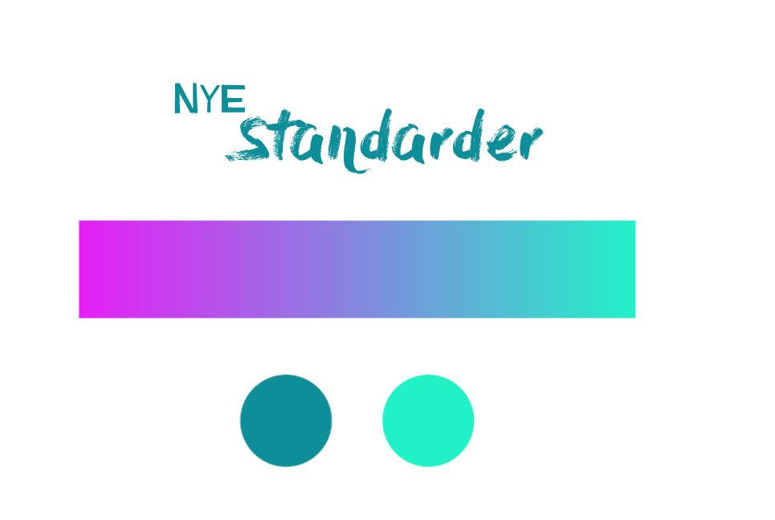
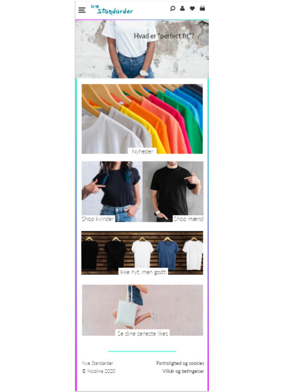
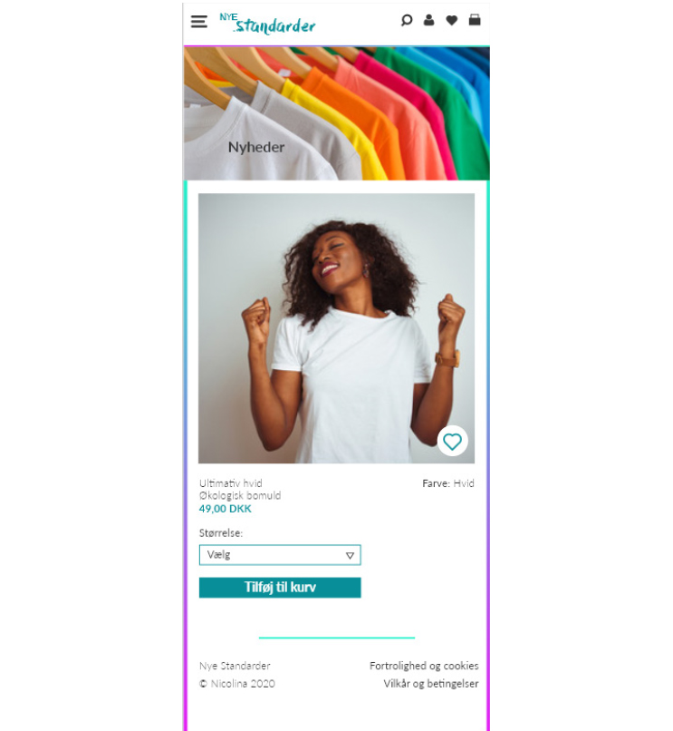
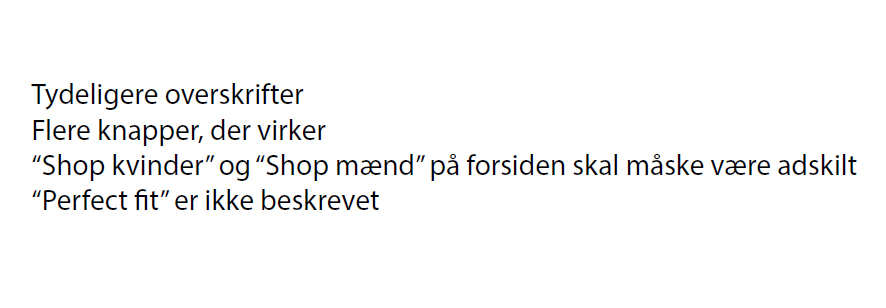

Grundlæggende UX
Beskrivelse
Tema 3, grundlæggende UX. Der er blevet introduceret til idégenereing, bl.a. desk research og måder at læse observationsmønstre. Derudover har surveys og interviews også været en del af disse empiriske data, der skulle lægge til grund for den perfekte idé og til sidst prototype og pitch. Der er blevet gennemgået product usability og måder at forstå brugeroplevelsen og forbedre den i sit arbejde. UI-kits og dets funktioner og læsning af dem indgår også i dette tema, samt det praktiske ved at få dem installeret. I den endelige prototype, endte jeg ud med en t-shirt shop der er til alle størrelser, da jeg fandt ud af, at der kunne være et marked her, da det er et udbredt problem at finde en t-shirt der passer den gængse person. At oprette en fungerende prototype der var let at læse for brugeren og som lignede et færdigt website.
Research
Desk research
Screendump a desk research
Desk Research er en måde hvorpå man metodisk undersøger materiale, som kan være relevant for din idéudvikling. Man kan indsamle viden ved at undersøge allerede skrevne artikler og finde data, som allerede er blevet lavet af forskellige analysemålinger - såsom demografi, salgsteknik, artikler mm. Desk Research er altså en måde at skære ind til benet, så du kan sammenligne og finde ud af hvad der rører sig inden for dit valgte område, inden du går videre med idéudvikling. Desk Research er derfor et værktøj man bruger i starten af sin proces. Jeg fandt blandt andet dette citat i min Desk Research: "Samtidig viser en undersøgelse fra Dansk Mode og Textil, at pasform faktisk har den mest loyalitetsskabende effekt blandt forbrugerne. Ud over pris er pasformen det vigtigste element for et genkøb." https://www.dmogt.dk/branchenyt/behov-for-oeget-fokus-paa-pasform
Interview
Interviewet, altså den kvalitative metode, er virkelig god til at komme dybere ind i forbrugerens tanker. I interviewet jeg fuldførte, fik jeg svar på nogle spørgsmål, jeg ellers skulle have gættet mig til. Derudover bekræftede det mig i, at min idé ikke var dårlig til valg af t-shirtshop-koncept og derfor kunne understøtte min teori.
Survey
Surveys, eller spørgeskemaer, er en god måde at lave kvantitative undersøgelser på, som man kan lave grafer over og få et mere generelt overblik. På billedet her ser vi en persona der er opdigtet efter de svar med højest stemmeprocent.
Andre metoder
Jeg har også været gennem observationsresearch, hvorved man observerer hvad en kunde gør i en given situation eller på et givent website. Jeg har været igennem Lightning Demos, altså fundet 3 løsninger der gør det godt indenfor sit felt og ikke nødvendigvis dét, som jeg arbejder med, for at blive inspireret og komme ud af boksen. Ved alle disse metoder til sammen kom jeg til nogle flere, nye indsigter.
Nye indsigter
Leveringsformer DAO – virkelig god til levering, ikke til retur og alt andet - En stor del af oplevelsen med at modtage din webordre er klart leveringen og efterfølgende kontakt, hvis noget skulle være i vejen med pakken.
Design & prototype
Skitser
Skitser tangerende til papirprototype
Jeg fandt hurtigt frem til at jeg gerne ville lade farver styre websitet og løfte det. Jeg fokuserede meget på at prøve at lade nogle få ting poppe mere ud end normalt, så det blev et spændende website.
Logo & genkendelighed
Blandt andet ved at komme denne gradient ind flere stedet på sitet, vil det hurtigt blive meget genkendeligt for kunden. Ideen var også at lade denne gradient køre ude i siden, så man havde en idé om hvor langt oppe elle nede man var på en given side, da man kender gradienten i forvejen. Et slags grafisk multitool.
Prototype
Forside
Produktside
UX feedback
Screendump fra dokument med feedback
En del af de metoder vi skulle gennemgå var blandt andet feedback. En del af denne feedback har også været begrundet med begrænset tid ift. aflevering af opgave.